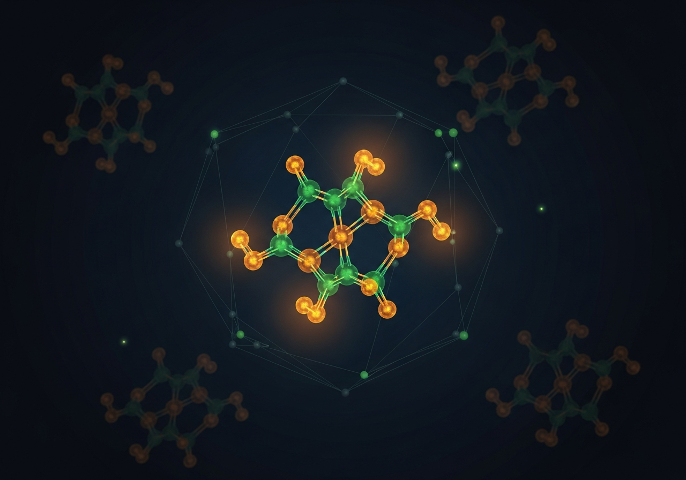

Spec-Driven GenAI

The pragmatic test for generative AI is not output quality in the abstract but fitness to a stated purpose: does the molecule meet its detonation target, does the image match the steering preference, does the code satisfy its contract? This direction studies generation where the specification is a hard constraint, not a soft preference.

Most generative AI is asked to create things that look plausible. In chemistry, plausible is not enough. A molecule that resembles known compounds but fails to meet its target detonation velocity or density is useless, however chemically valid it appears. The challenge is not generation in the abstract but generation under hard physical constraints, verified by computation rather than by visual inspection.
Domain-Gated Latent Diffusion for the Discovery of Novel Energetic Materials addresses this directly. Standard latent diffusion does not respect domain-specific feasibility constraints, so the model is augmented with a gating mechanism that keeps generation anchored to physically plausible chemical space. The result is genuinely novel chemistry rather than interpolation of known structures, with detonation targets confirmed by quantum-chemical computation.
When you describe an image to a generative model, you commit to a fixed description before seeing the result. In practice, people refine what they want as they see what the model produces. The specification is not a string you type once but a trajectory of expressed preferences that sharpens over rounds. A system that cannot accommodate iterative refinement is only useful when you already know exactly what you want before you start.
Stable Steering: Interactive Steering for Diffusion Image Generation explores what it means to guide generation through preference loops rather than fixed prompts, keeping the output coherent as the specification evolves across rounds.
Standard code generation treats output as something to revise after the fact: generate a draft, inspect it, fix what is wrong. This is practical for prototyping but tells you little about whether the model genuinely reasons ahead or simply pattern-matches and patches. A more revealing test is to remove the option to revise.
Code Generation with Speculative Oracles introduces a forward-only commit protocol where each generated line is irrevocable. The constraint forces the model to satisfy the specification as it writes rather than after, and produces machine-readable traces that make the generation process analyzable at each step, not only by inspecting the final output.
Constrained text generation means satisfying competing objectives at the same time, not trading one off against the other. Improving a headline for clickability while refusing to introduce misleading framing is a real specification with two hard requirements, not one soft target. Whether a model can navigate that kind of constraint is a controlled test of something that matters well beyond headline writing.
LLM-Guided Headline Rewriting for Clickability Enhancement (2026) studies exactly this case: a model asked to enhance engagement without crossing into sensationalism, in a domain where the cost of getting it wrong is visible and immediate.